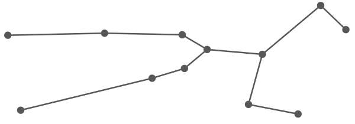

Star Constellation for Taurus
Element: Earth
Taurus Symbol

Taureans are the human equivalent of moss. A handmade wooden chair. They are normally satisfied with the way things are. They embody stability. Sitting in a patch of grass admiring the breeze. When everything else seems to be falling apart, Taureans are an oasis of calm, a rock of dependability. Practical knowledge and experience is their modus operandi.
Taureans are oriented around the physical world. They tend to be grounded and logical. They love routine and they’re committed to their own comfort. They like to be in control. They’re patient and steady, and their materialism is an extension of their pursuit of stability.
Once they get into a groove, it’s difficult for them to get out of it. Object in motion stays in motion. Object at rest stays at rest. Appreciative of beauty. Attuned to physical pleasure. They like things to be predictable. They are perfectly happy eating the same meal over and over, or wearing the same outfit for a week straight. They would prefer things be consistent than chaotically good. They like to discover what they have the most fun doing, and then do it to the extreme.
Tauruses have a regal quality about them. They are graceful and diligent laborers. They can be stubborn, bull-headed, and set in their ways, but they are also great listeners and very dependable.
Taurus can absolutely go on forever. They never feel fatigued. They are like machines. And no matter what they throw at them, they will inevitably overcome their obstacles because they’ve already prepared for every contingency. They are the hand-built truck that will never break down. They are the bulletproof vest that never rips.
Complimentary Signs to Taurus: